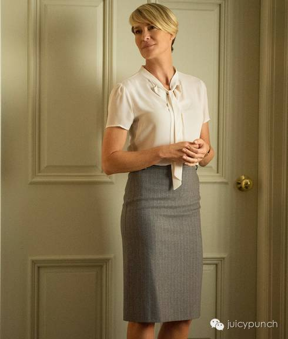
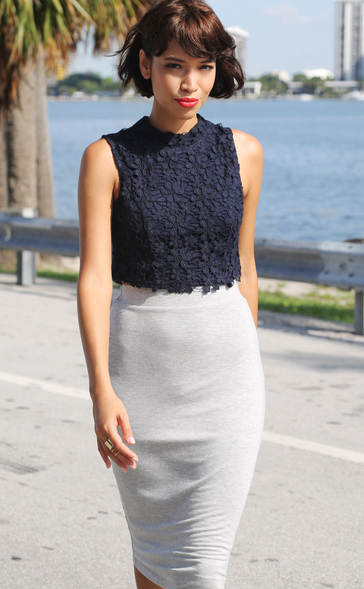
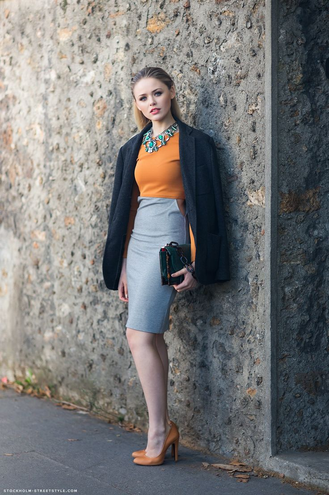
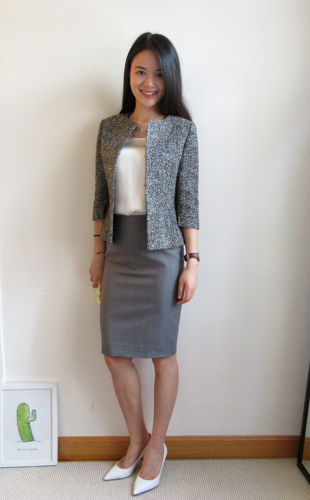
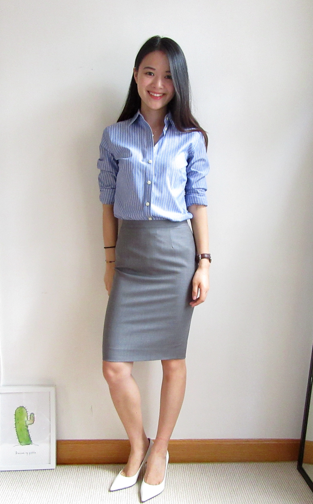

正文: 又是有大牛答了高票的问题。前面都回答到的，就不重复啦，那么juju就来讲讲职场包臀裙怎么穿吧？
我想很多MM可能也和juju一样，在实习或者刚工作前，订做了一些西装西裤，西装裙。
juju 衣柜里现在还有有一堆，黑色，灰色，藏青色，条纹的。。用的还是最“规矩”的西装面料。
如果这件事没有发生在你身上过，那么你赢了。。。。
可是真的上班了以后，发现着装要求其实没有那么严格。只有实习小妹才真的规规矩矩的白衬衫+西装裙来上班。
于是呢，这些订做的西装套装，就一直被闲置在衣柜了。
可是因为当时选的都是好料子，这几年人也没胖。所以又舍不得扔。
所以juju决定最近想着法子来宠幸它们一下。先把老本穿回来再说！
这次Juju先拿出一条灰色的西装半裙来示范。
总之，是抛砖引玉，给大家提供个思路。
——————————————————————————————
订做的灰色西装裙，配上订做的白衬衫，穿上看起来是这样的。
（年纪小那会儿，去面试还不敢穿红鞋子。穿的大概是黑色高跟鞋吧。）
其实发型弄弄整齐，化个妆，看起来还是挺精神的。
问题是，有的办公环境没有那么严肃。天天这么规矩去上班的，可能只有实习小妹。
一定要穿白衬衫的话，选择有些别致剪裁、设计的款式，或者丝质的料子。
（别致 一些的剪裁）
（丝质略有珠光）
（飘带丝质衬衫，增加些女人味）
(无袖浅色衬衣）
着装要求没那么严肃的地方，可以配亮丽的颜色，有趣的图案。中和掉一些灰色西装半裙的老气度。
（入镜无数次的红波点）
（蓝波点。JuJu是收集癖，还有一件黑白波点没入过镜，哈哈）
（心心，星星什么的，自行考量公司的氛围啊。）
（类似蛇纹的花纹。蛇纹真丝衬衣juju也有！是那种浅浅的花纹，性感但是不aggressive。）
（任何漂亮的，有别致的印花的上衣）
(这个蕾丝短上衣也好看。juju准备弄一件来穿穿）
夸张的配饰
（全身灰，蓝色来顺个色）
（橘红色顺个色）
饰品方面，Juju很欠缺。你看，就两条项链，还是一个款式的（好伤感）。
（这个是全身黑，但是思路是一样的啦）
(亮色和项链一起来。这身不是灰色西装半裙，还是看个思路）
蜂腰上衣
（蜂腰设计曾是Juju的大爱，会让自己瘦瘦的身材显得比较有曲线。）
(蜂腰设计的上衣juju也有几件，不过夏天收起来了哈。只有这件拍拍了，有那么点蜂腰小意思，不明显。）
（来张秀场图）
针织上衣
有些地方现在穿针织上衣有点热哈。
Juju这几天在香港都有穿纯棉针织上衣，在空调房里觉得正好。反正我也不在外面走动。
（超级好看的灰蓝色，图片没拍出原色）
（来个亮色的，这个近看一眼看出来是针织的，不是T恤，juju上班可以穿的哈）
（白色针织短上衣）
Juju觉得冬天的时候，严肃的半裙，配个宽松的毛衣，加上夸张的项链、或者内搭笔挺的衬衫很好看。
（图片看着觉得很热？sorry啊。哈哈）
有些小特色，小别致的短外套
（此刻不要加上可以成一套的灰色西装外套了啊。严肃点的场合，想要顺色的话，有点小香风的短外套，或者垂垂的略宽松休闲的西装外套比较好）
（蜜桃色配浅灰色也不错）
 （牛仔外套，也没有违和感。这个就只有casual friday才能穿了啊）
（牛仔外套，也没有违和感。这个就只有casual friday才能穿了啊）（亮色，或者有花纹的小短外套。图片看个思路哈）
喂，怎么能少了万能的条纹？
（严肃些的竖条纹衬衫是这样的。Juju去见年纪大一些的中资的客户，一般这么穿。规规矩矩的，也不会出错。）
（再看个其他美女。通勤穿豹纹的话，一定要是小面积点到即止。juju自己喜欢蛇纹多一些，觉得更低调。不过这个是个人偏好哈。英国新的女首相的豹纹鞋之前火了一把。）
（这件条纹是像薄毛衣的料子，不好意思又热到大家了。）
Casual friday 想轻松一下穿个法式横条纹的话，juju得穿针织的，丝绸的或者别的啥料子。
纯棉T恤，juju是不能穿去上班的，casual friday也不行！！各个公司要求不一样，自行判断。
（普通的条纹T恤juju只能周末穿了哈，完全压住了灰半裙的老气感。这套换个红色平底芭蕾舞鞋，或者人字拖更周末。）
当然啦，还有很多穿法，比如配长马甲，长开衫，配在风衣里面穿，等等等等。
总之呢，要开动脑筋，把这条订做的西装裙穿回老本！
———————————————————————————————————————————
感谢阅读。
原文请戳
通勤穿搭||拯救那条当年订做的西装半裙
欢迎关注微信公众号, 请搜ID：juicy_juju
这是一个主要分享通勤穿搭，顺便分享吃喝玩乐的公众号。